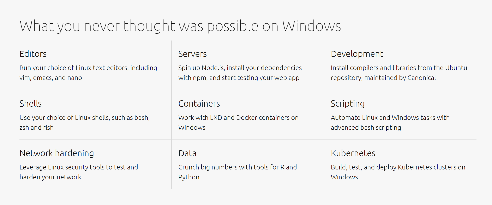

Usage
Now I'm trying to tell you how to set up a Linux on your Personal computer
Subsystem on windows
- You can now experience Ubuntu system on Windows!
- Set a link between wsl and your windows files.
- Maybe learn to use git
sudo apt-get install git(On ubuntu).
git init
git pull/push
...
- Recommend "菜鸟教程",to learn more Linux terminal command.
A real Linux
- Get a USB for system
Empty and pack up the data before format your usb for Linux system.
Download the mirror of the Release version
Use Ultra ISO to open and burn it on your USB
- Create a disk partition for the new system(which will disappear on your windows file manage tool)
Please find help on the Internet
- Set your Computer to open by usb driver
Make sure your usb is Plugged in your laptop
Restart your computer and open the BIOS
Set your USB driver to be opened at first
Restart
- Distribute the disk space(Make sure you choose the zone you set up in step 2)
Follow the instruction and allocate the space by yourself.
Personally, there are only '/' '/home' '/boot' 'swap',four contents need to be initialized